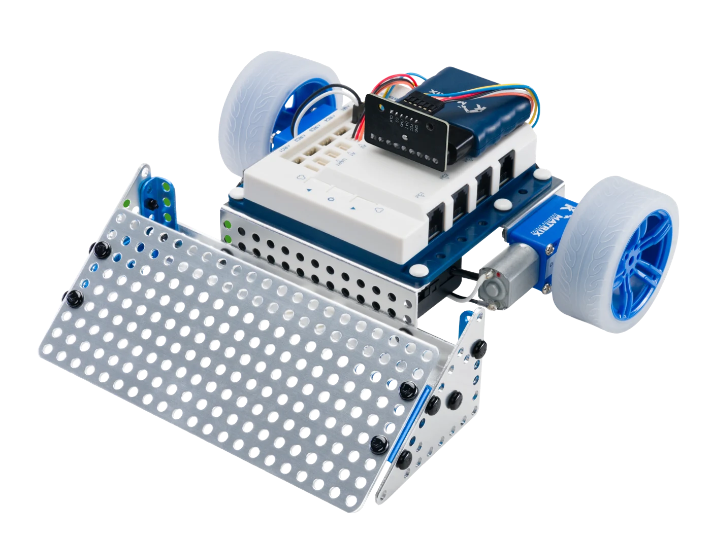
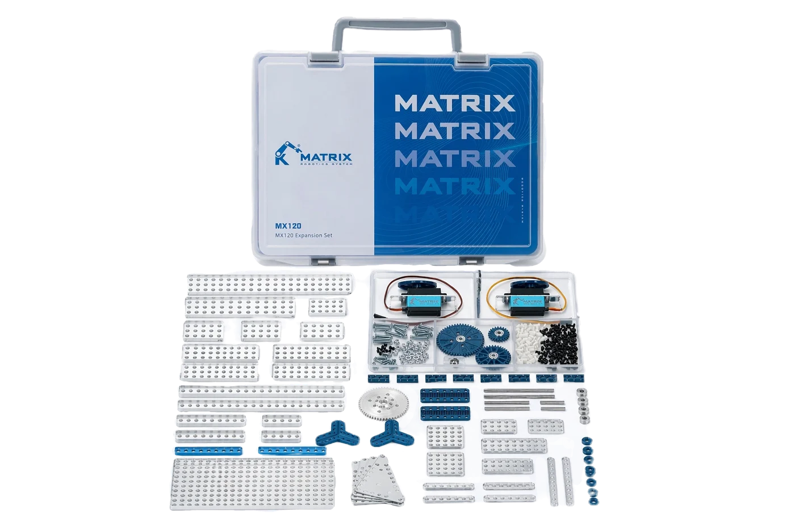

組裝，理解結構
從機構與零件搭配開始，觀察結構如何影響機器人的行動。
提供 MATRIX Robotics 教育機器人與擴充配件選購，依入門學習、任務挑戰與專題需求討論配置。

MATRIX 的模組化結構、控制器與感測配件，讓學習從「照著做」走向「想辦法做到」。依程度與目標，選擇合適的套件與延伸方向。
從機構與零件搭配開始，觀察結構如何影響機器人的行動。
透過圖形化程式與 Arduino 相關工具，練習控制、感測與除錯。
以循線、任務與專題為方向，結合測試、調整與團隊合作。
不同套件的控制器、感測器與軟體支援有所不同，請依產品規格確認。
先確認控制器與既有套件，再挑選感測、結構與擴充零件。更多 MATRIX 品項歡迎洽詢。


圖片為原廠產品或組裝示例。實際包裝、相容性、軟體支援與配件請依各型號確認。
| 需求方向 | 可先了解 | 洽詢前可以準備 |
|---|---|---|
| 入門組裝與程式控制 | Mini Essential Set V2 | 學員程度、使用人數、是否已有程式基礎。 |
| 循線、任務與挑戰 | R4 MissionGo Set | 任務目標、需要的感測方式與現有資源。 |
| 既有機器人的機構延伸 | Expansion Set 120 | 現有核心套件型號、想增加的結構與功能。 |
擴充套件需搭配相容核心套件使用，並非獨立完整的可程式機器人。
提供學習目標、對象、人數與現有套件，讓我們一起討論。